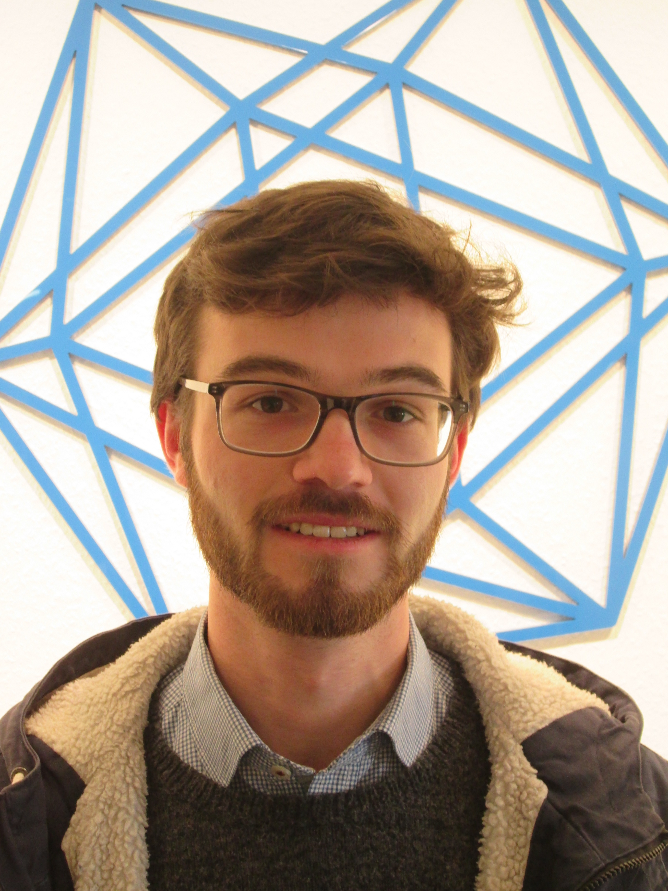

Matthias Storzer
About me
I am a PostDoc at University College Cork working with Robert Osburn.
From 2020 to 2024, I was a PhD student at the Max Planck Institute for Mathematics in Bonn where I was supervised by Don Zagier. After that, I spend one year as a postdoc at University College Dublin.
I did my MSc at TU Darmstadt under the supervision of Nils Scheithauer.
I am interested in number theory, in particular modular objects, and their interactions with other areas of mathematics, such as combinatorics, representation theory, and low-dimensional topology.

Contact
mstorzer *at* ucc *dot* ie
Office G.56,
School of Mathematical Sciences,
University College Cork,
Western Gateway Building,
T12 XF62, Cork, Ireland
Preprints and publications
-
With R. Osburn,
Arborescent links and modular tails,
preprint 2025. -
With A. Folsom, J. Males, and L. Rolen,
Oscillating asymptotics and conjectures of Andrews,
preprint 2023. -
With S. Garoufalidis and C. Wheeler,
Perturbative invariants of cusped hyperbolic 3-manifolds,
preprint 2023. -
With K. Bringmann, S.H. Man, and L. Rolen,
Asymptotics of parity biases for partitions into distinct parts via Nahm sums,
Proc. Lond. Math. Soc. (3), 129:6 (2024), e70010. -
q-Series, their Modularity, and Nahm's Conjecture,
Ph.D. thesis, University Bonn, 2024.